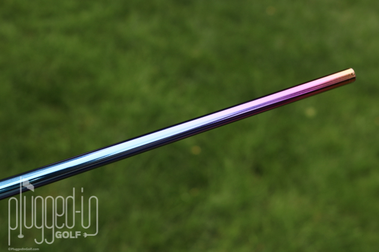

True Temper has officially introduced the two newest shafts to the HZRDUS family: the HZRDUS Smoke Green RDX and HZRDUS Smoke Red RDX. These new offerings expand the popular Smoke lineup with enhanced performance characteristics.
The RDX Difference
The RDX (Research + Development + eXcellence) designation signifies these are the most refined versions of the Smoke platform to date. Both shafts feature updated carbon fiber layouts and improved resin systems for better energy transfer.
"The RDX family represents our commitment to continuous improvement," said True Temper's Director of Product Development. "We've taken the best-in-class HZRDUS platform and made it even better through extensive tour player feedback and advanced materials science."

Two Distinct Profiles
The HZRDUS Smoke Green RDX is the stiffest shaft in the HZRDUS RDX family, designed for players with aggressive swing speeds who demand maximum stability and low spin. The HZRDUS Smoke Red RDX is the only mid-launching shaft in the RDX line, offering a balance that appeals to a broader range of players.
Key specifications include:
- HZRDUS Smoke Green RDX: Low-Launch, Low-Spin profile
- HZRDUS Smoke Red RDX: Mid-Launch, Mid-Spin profile
- Weight range: 60-70 grams
- Flex options: 5.0, 5.5, 6.0, 6.5
Tour Validation
Both new RDX variants have already seen significant play on professional tours worldwide. The validation at the highest levels of the game confirms these shafts deliver the performance characteristics that serious players demand.